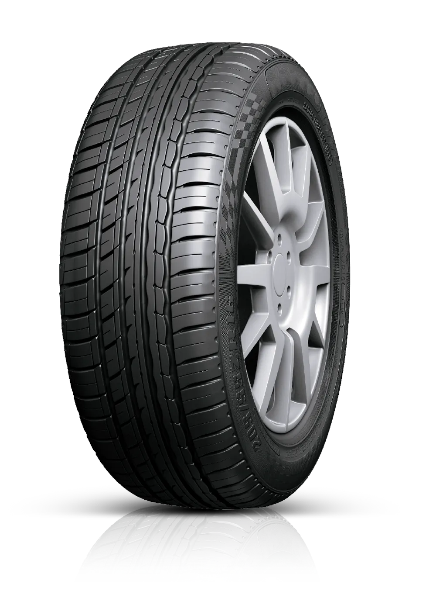
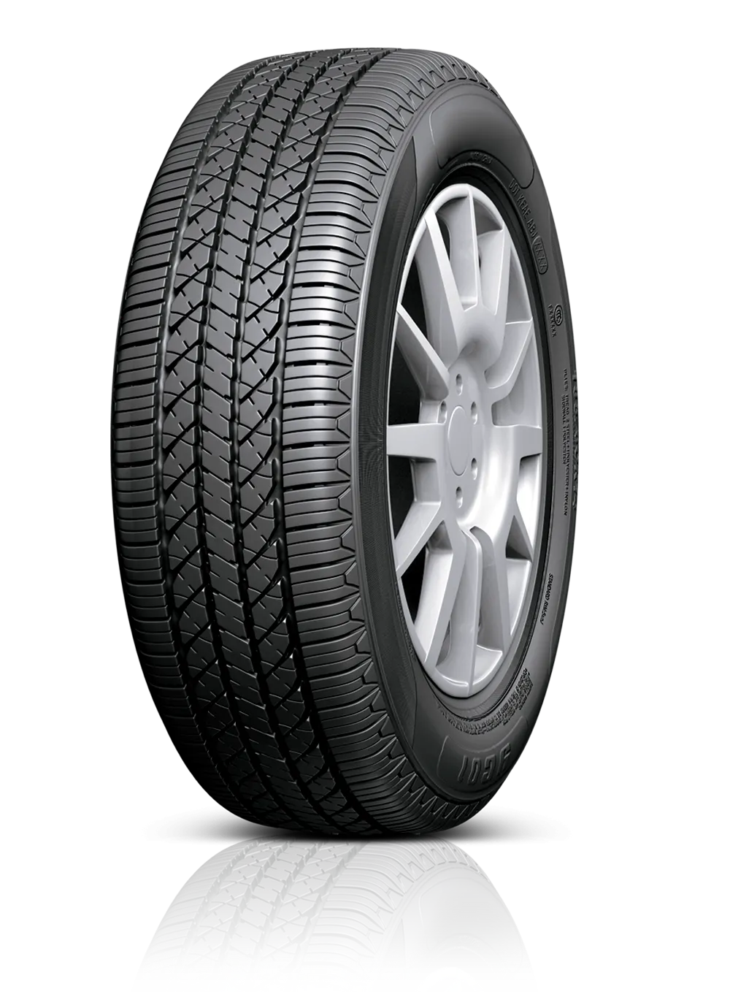
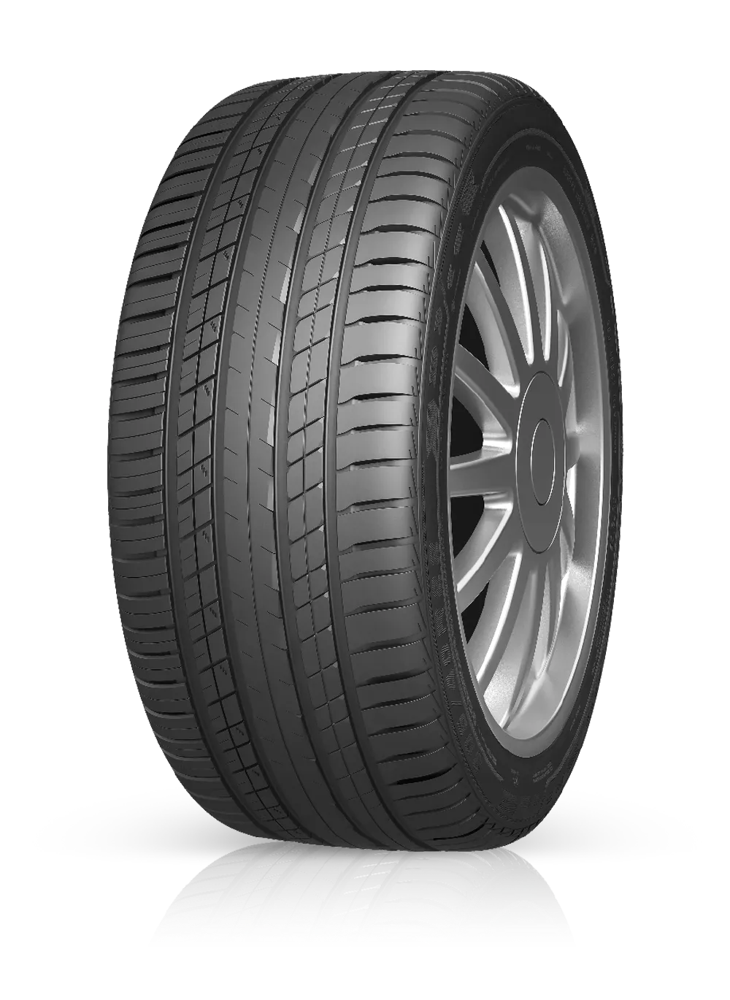
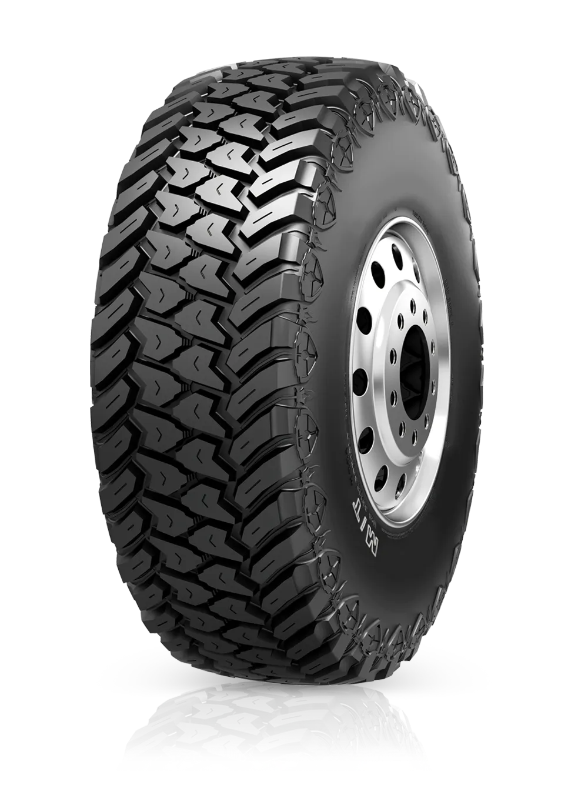
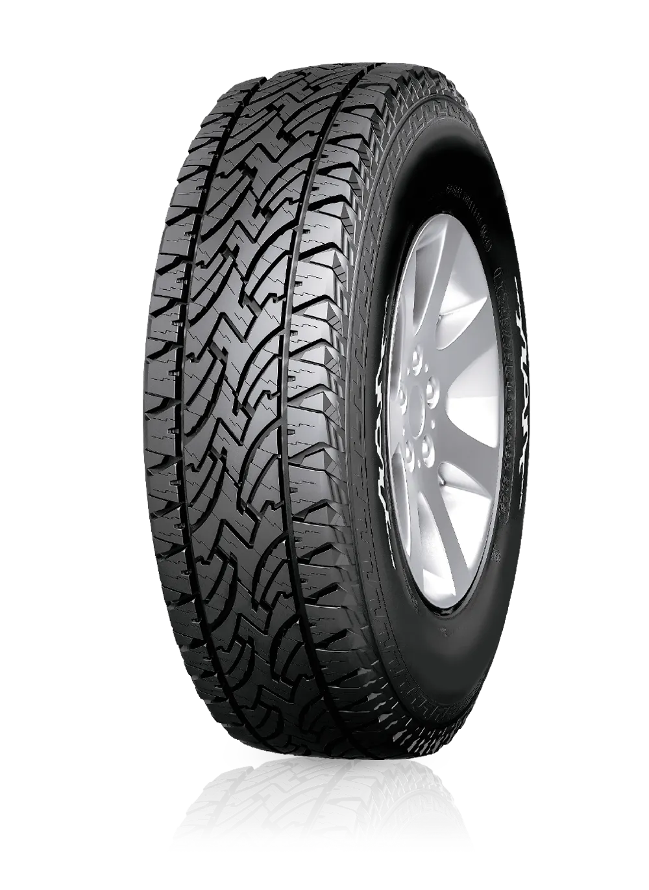

Neumáticos Roadx
Diseñadas para adaptarse a distintas condiciones de conducción, las cubiertas RoadX se destacan por su andar silencioso, eficiencia y excelente relación precio-calidad, convirtiéndose en una alternativa cada vez más elegida por conductores que priorizan desempeño y durabilidad.

ROADX
U-11
Neumático innovador de alto rendimiento que combina comodidad con bajo consumo de combustible. El dibujo asimétrico de la banda de rodadura incluye una nervadura central que proporciona un agarre y manejo firmes, lo que permite una dirección y un frenado precisos.

ROADX
T-01
Alta resistencia al desgaste y gran economía de combustible, T01 es la primera opción tanto para TAXIS como para AUTOS FAMILIARES. Un diseño avanzado de la banda de rodadura junto con una fórmula mejorada y una estructura de neumático se unen para crear un neumático hecho especialmente para familias: cómodo, seguro y estable.

ROADX
SU-01
El diseño de la nervadura central proporciona mayor tracción para una aceleración y un frenado más seguros. Cuatro ranuras principales drenan el agua de manera eficiente para mejorar el manejo en condiciones húmedas. El paso del bloque de la banda de rodadura y las entalladuras incorporadas reducen la vibración y el ruido de los neumáticos para una conducción más cómoda.

ROADX
MT
Neumático especialmente diseñado y desarrollado para los entusiastas del cross-country. Los grandes bloques en los hombros mejoran enormemente el manejo en caminos fangosos y rocosos. Los bloques de hombros escalonados mejoran la tracción y la capacidad de ascenso

ROADX
AT-02
Diseño original todoterreno con excelente agarre y manejo excepcional. Mayor comodidad en carreteras asfaltadas y resistencia a la abrasión en terrenos sin asfaltar. El compuesto único de la banda de rodadura mejora la tracción, mejora la resistencia al desgaste y proporciona un mayor manejo, lo que lo hace ideal para uso en todo terreno